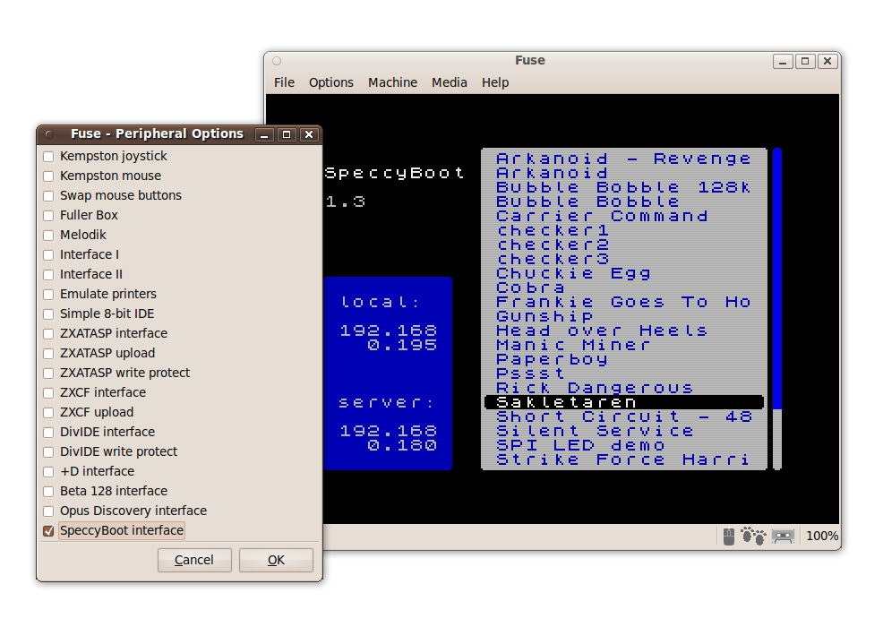

When you switch on a SpeccyBoot-equipped Spectrum, it will do the following:
snapshots.lst
is made (using a TFTP read request, broadcast on your local
network). If the server has no such file, an attempt is made to
load and execute a snapshot named menu.z80 instead.
If this also fails, an error message is displayed.snapshots.lst are displayed as a
menu. When a snapshot is selected, it will be loaded and
executed.Configuration is kept to an absolute minimum:
Here's how to use SpeccyBoot:
There are also a couple of optional features:
You will need to install and/or activate a TFTP server on a computer in your local network. Fortunately, TFTP server software is freely available for most platforms. Your TFTP server must be capable of responding to broadcast requests, since that is what SpeccyBoot uses. Most (but not all) TFTP servers are, and some need an option explicitly set to enable this.
In Ubuntu 9.10, you can use atftpd:
sudo apt-get install atftpd
In Mac OS X, the built-in TFTP server can be enabled like this:
sudo launchctl load -w /System/Library/LaunchDaemons/tftp.plist
Most UNIX variants either include a TFTP server by default, or allow you to install one quite easily. There are third-party TFTP servers for Microsoft Windows too.
Create a directory named speccyboot in your TFTP servers's main directory (atftpd in Ubuntu 9.10 uses /var/lib/tftpboot, Mac OS X 10.6 uses /private/tftpboot, and some UNIX clones use /tftpboot). Copy your Z80 snapshots to this speccyboot directory:
TFTPBOOT=/var/lib/tftpboot
# <-- adapt to your distribution
sudo mkdir $TFTPBOOT/speccyboot
sudo chown <your-username> $TFTPBOOT/speccyboot
cd $TFTPBOOT/speccyboot
cp <path-to-snapshots>/*.z80 .
After you have created the directory above, and whenever you have
added or removed a snapshot to/from this directory, you will need to
update the SpeccyBoot index. This is a (case-insensitively sorted)
list of snapshots named snapshots.lst. On a UNIX machine,
the script speccyboot-update can be used. It is located in
the utils directory of the SpeccyBoot source code, and
is installed into /usr/local/bin by make
install.
To update the snapshot index this way, just type:
speccyboot-update
If the TFTP server configuration above went well, you should now be able to turn on your Spectrum, see it figure out its IP address as well as that of the TFTP server, and present your list of snapshots. Use the arrow keys to navigate the list, the alphabetic keys to jump directly to snapshots whose name begin with that letter, and Enter to load the selected snapshot.
To boot into BASIC rather than the SpeccyBoot menu, press Caps Shift and keep it pressed while power-cycling/resetting the Spectrum.
The SpeccyBoot software includes a patch for Fuse (the Free Unix Spectrum Emulator). This allows you to try the SpeccyBoot out in an emulated environment — without any Spectrum or SpeccyBoot hardware.
The emulation is based on Ethernet TAP networking. Please note that this emulation currently only works with Linux (I have used Ubuntu 9.10 for this myself). Other UNIX variants should be possible to support in the future.
You need to create a TAP interface and configure your network so this TAP interface can connect to your DHCP and TFTP servers. First, ensure you have the tapctl and brctl utilities installed:
sudo apt-get install uml-utilities bridge-utils
For network configuration in Ubuntu 9.10, I set up a bridge
br0 to connect eth0 (the physical Ethernet
interface) with fuse_tap (the TAP interface for Fuse). I
modified the file /etc/network/interfaces to read as
follows:
# This file describes the network interfaces available on your system # and how to activate them. For more information, see interfaces(5). # The loopback network interface auto lo iface lo inet loopback # The primary network interface # auto eth0 # iface eth0 inet dhcp auto eth0 iface eth0 inet manual auto fuse_tap iface fuse_tap inet manual pre-up tunctl -g admin -t fuse_tap pre-up brctl addif br0 fuse_tap post-down brctl delif br0 fuse_tap post-down tunctl -d fuse_tap auto br0 iface br0 inet dhcp pre-up ifconfig eth0 down pre-up ifconfig fuse_tap down pre-up brctl addbr br0 pre-up brctl addif br0 eth0 pre-up brctl addif br0 fuse_tap pre-up ifconfig eth0 up pre-up ifconfig fuse_tap up post-down ifconfig eth0 down post-down ifconfig fuse_tap down post-down brctl delif br0 eth0 post-down brctl delif br0 fuse_tap
Check out the code from the Fuse and SpeccyBoot Subversion repositories, copy the SpeccyBoot ROM to the Fuse ROM directory, and apply the patch to Fuse:
sudo apt-get install binutils gcc make sdcc subversion
svn co https://speccyboot.svn.sourceforge.net/svnroot/speccyboot/trunk speccyboot
svn co https://fuse-emulator.svn.sourceforge.net/svnroot/fuse-emulator/trunk fuse-emulator
make -C speccyboot
cp speccyboot/firmware/speccyboot.rom fuse-emulator/fuse/roms
cd fuse-emulator
patch -p0 < ../speccyboot/fuse-patch/speccyboot-for-fuse.patch
Now configure and build Fuse. The resulting binary has a few new menu options and command-line parameters to enable the SpeccyBoot emulation (briefly described in the patched Fuse man page). In short, the following command line launches SpeccyBoot in Fuse, using the Ethernet TAP interface fuse_tap for networking:
fuse --speccyboot --speccyboot-tap=fuse_tap
Here's what it looks like:
This step is optional. The syslog feature will not affect your retro-gaming experience in any way.
SpeccyBoot uses (a liberal interpretation of) the BSD syslog protocol to display status information. Those messages can be viewed using a suitably configured machine in your local network. The syslog output is primarily useful for debugging.
Just like TFTP, the syslog protocol is supported by virtually all UNIX and UNIX-like operating systems. Most UNIX syslog daemons are capable of receiving syslog output from other machines in the network. However, most syslog daemons also disable this behavior by default, so you will likely have to explicitly enable it to see SpeccyBoot's messages.
On Mac OS X, you will need to edit
/System/Library/LaunchDaemons/com.apple.syslogd.plist,
and then restart syslogd.
(More
details can be found here.) Here's how it appears in Console.app
(SpeccyBoot is 192.168.0.196 here):

Another way of viewing the syslog output is Wireshark. Wireshark interprets syslog messages correctly, and displays it along with the rest of the communication.